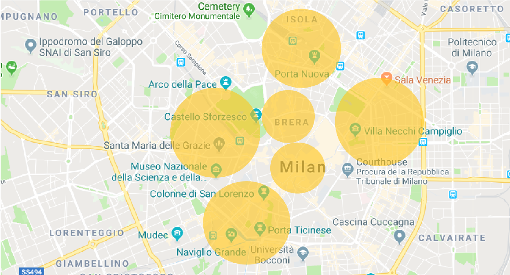
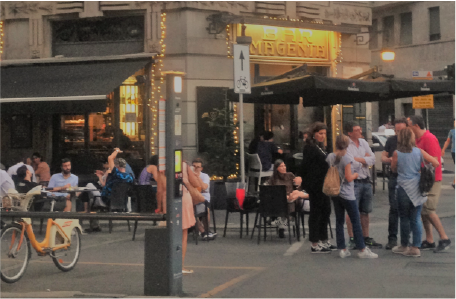

In Milan there is the cult of "l'aperitivo", that could be similar to the American Happy Hour. But here it's much more, it's a way to live the city.
Scroll the page for the list or click in the area you are interested in for a drink or a nibble.

-

-
Duomo
Panzerotti di Luini
The meeting point of all the students who cut school.
Il Panino Giusto
The michetta is the Milanese tipical bread. Ad here you can taste it at its best.
La Rinascente terrace
Go to the 7th floor of this shopping mall and you can eat and drink in front of the Madonnina on top of the Duomo.
-
-
-
Porta Venezia
Hotel Sheraton Diana
For a very fashion aperitivo.
Princi
The classic baker.
Bar Basso
Where the Negroni Sbagliato was born. 1 part (1 oz, 3cl) Campari, 1 part (1 oz, 3cl) Red Vermouth, 1 part (top) Sparkling Wine. Build in a double rocks glass with ice and garnish with a slice of orange.
-
- 